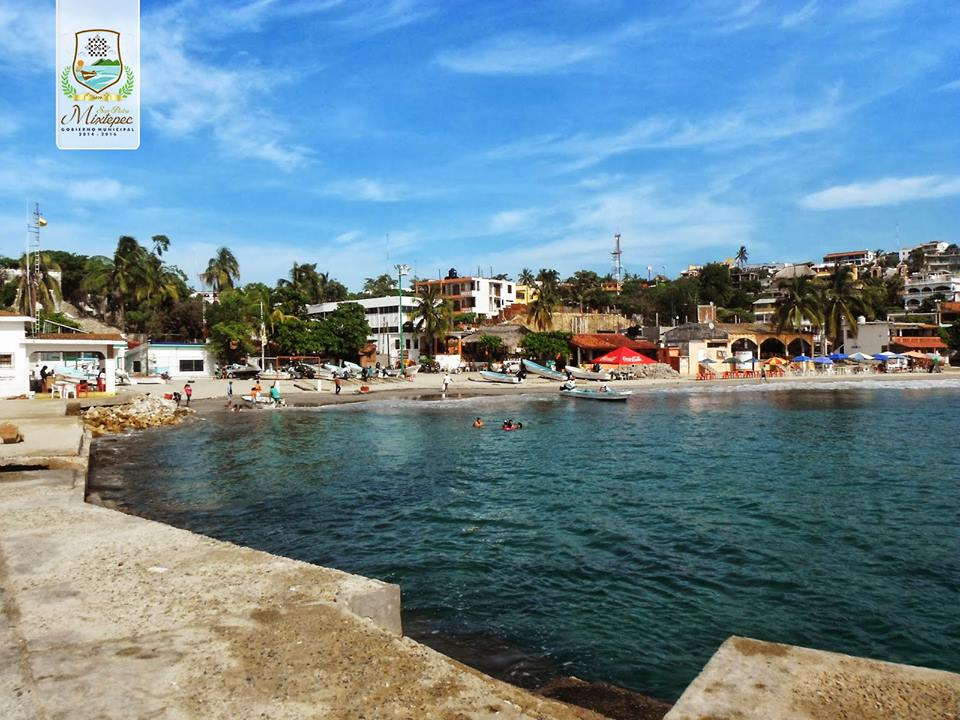

Playa Bahía Principal

Ofrece el servicio hoteles, cabañas, suites, bungalows, restaurantes y un trailer park. Presenta un oleaje regular y es posible contratar embarcaciones para los tours por las bahías y la pesca deportiva. Hacia el poniente de la playa principal se localiza Playa Capitanía que ofrece un oleaje más moderado.
Se denomina así a la que se halla en el extremo oriente de la bahía Principal de Puerto Escondido. Mide aproximadamente 500 metros de longitud por un ancho que varía entre los 40 y 80 metros.
Presenta pendiente suave, arena fina color gris y sin contaminación. El agua es de color verde azul, de temperatura templada y oleaje regular. Es posible contratar el servicio de embarcaciones para realizar recorridos por las diferentes playas de Puerto Escondido o para practicar cualquier otro deporte acuático.
En esta playa, se ofrece el servicio de embarcaciones y equipo para la práctica de la pesca deportiva de altura. Debido a que esta actividad se debe desarrollar en aguas profundas, las embarcaciones deben alejarse de la playa, aproximadamente 15 o 20 millas mar adentro. Entre las especies que se pueden capturar se tienen: pez vela, dorado, marlín y pez gallo.
En las Fiestas de Noviembre se lleva a cabo el torneo de pesca deportiva, a nivel nacional e internacional, con duración de dos o tres días. Participan deportistas de Acapulco, Salina Cruz, Zihuatanejo, Ixtapa, Chiapas; así como aficionados extranjeros. Este lugar cuenta con restaurantes de comida regional, internacional, italiana y japonesa; hoteles, villas y cabañas, casas de huéspedes, bungalows, suites y trailer park.
La playa Principal se encuentra ubicada al sur de Puerto Escondido a escasos 50 metros, desde el andador turístico Pérez Gasga.